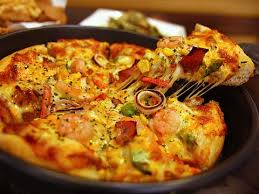
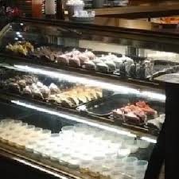

<thml>
<head>
<title>首頁</title>
</head>
<body>
用餐區中央是自助吧，<br>
想吃小美冰淇淋或者雀巢熱奶茶巧克力或者碳酸汽水果汁都能找的到；<br>
吃餐的生菜沙拉不可少，<br>
餐前先來一盤開開胃，<br>
還有大人小孩都愛的玉米濃湯先喝一碗，<br>
暖個胃，搭配正餐好速西。<br> 

<hr>     
奶香燻雞培根義大利麵<br>
熊稱它為不偷工減料的良心義大利麵，<br>
卡不里吃到飽不會因為平價就不給很多塊燻雞肉片，<br>
更加有料美味。<br>

<p>
<iframe width="560" height="315" src="https://www.youtube.com/embed/UX7gERW9DDI" frameborder="0" allow="accelerometer; autoplay; encrypted-media; gyroscope; picture-in-picture" allowfullscreen></iframe>
<p>
<a href="index.html">連到第一頁</a>
<a href="2hd.html">連到第二頁</a>
<a href="4hd.html">連到第四頁</a>
<a href="5hd.html">連到第五頁</a>

</body>
</thml>